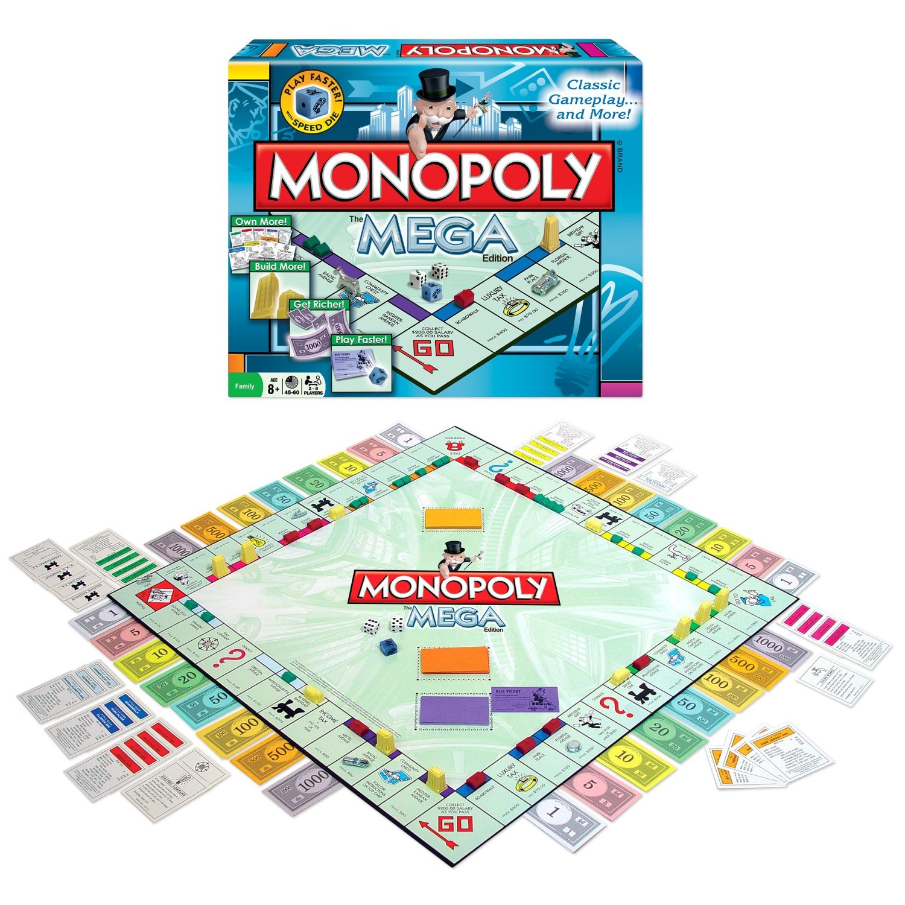
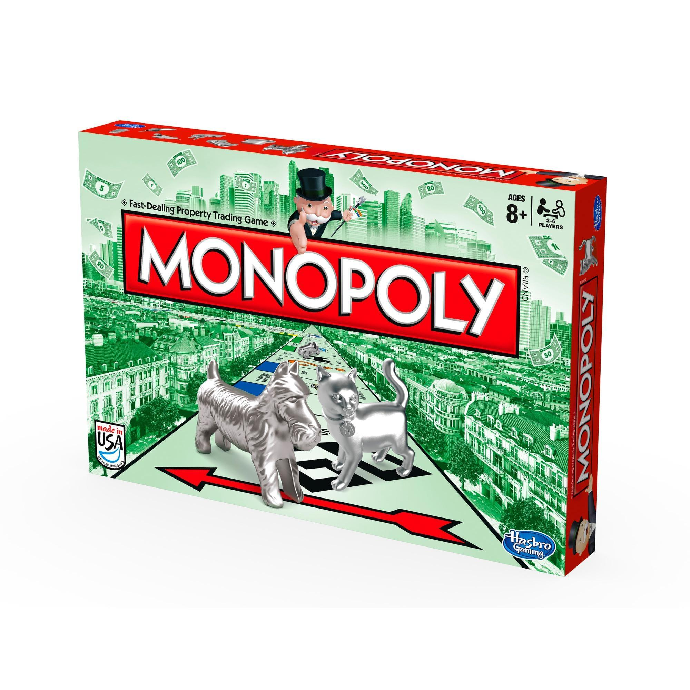

Antes
Sua mecânica de jogo foi baseado no The Landlord’s Game de Elizabeth J. Magie Phillips, que o criou com a proposta de ser uma “ferramenta” para ensinar a teoria do economista Henry George sobre taxa simples e de criticar a política econômica de então.
Monopoly
É um dos jogos de tabuleiro mais populares do mundo, em que propriedades como bairro, casas, hotéis, empresas são compradas e vendidas, em que uns jogadores ficam "ricos" e outros vão à falência. No Brasil é mais conhecido como Banco Imobiliário.
Agora
Com o tempo, a finalidade do jogo se transformou em usá-lo somente por diversão e desfrutar de um bom desafio com amigos.
